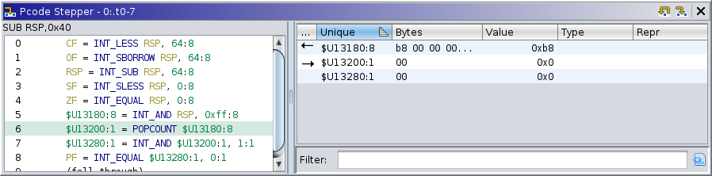

|  |
P-code is the "microcode" of Ghidra's processor specifications, compiled from its SLEIGH specification. Originally designed to facilitate static analysis, it is easily applied to emulation as well. Stepping each p-code operation is an effective means of debugging the SLEIGH. The plugin provides two panes: 1) The p-code listing, and 2) Temporary ("Unique") variables. The listing works similarly to the dynamic listing. It displays each p-code operation, highlighting the current "counter", which is the next operation to be executed. There is also a cursor, allowing selection of an operation. The variables view operates similarly to the registers view, displaying the current value of each unique variable.
P-code stepping is built into the emulation framework, and so the other UI elements (listing, registers, etc.) will display machine state from emulated p-code operations, i.e., partially executed machine instructions. The p-code stepper provides a means of navigating time at the p-code-level and displaying p-code-level details of the machine state.
The unique variables table displays information about temporary variables, including their values and user-assigned types. It has the following columns:
The p-code stepper provides the following actions. Regarding other windows' ability to interact with the target, stepping at the p-code level implies you are no longer "at the present."
This action is available when the current coordinates have some positive number of p-code ticks. It steps the trace backward to the previous p-code tick.
This action is available when a thread is selected. It steps the current thread forward to the next p-code tick, using emulation. Note that emulation does not affect the target. Furthermore, emulation of p-code user-ops, including those indicating a system call, is generally not possible. Pluggable mechanisms for emulating user-ops and/or simulating a more complete system is a work in progress.